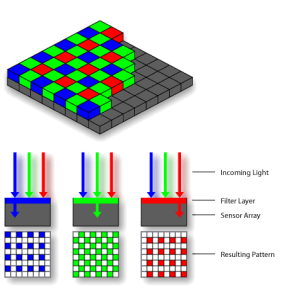

Le principe de base de la photographie numérique est la dissociation entre la capture et l'enregistrement de l'image.
Un capteur électronique saisit l'image, tandis que l'image est stockée sur un support amovible.
La naissance de la photographie remonte au XIXe siècle. Dans les appareils argentiques, la pellicule est le capteur, au format standardisé 24 × 36, contenant une solution avec des grains d’argent sensibles à la lumière. Le processus de traitement, la
révélation, est réalisé par le photographe dans son laboratoire. Avec l’évènement du numérique, la pellicule a été remplacée par des capteurs, non plus de taille standard, mais de tout format, s’adaptant à tous les types d’appareils numériques. Le rôle joué par
les grains d’argent est assuré par des composants électroniques, les photosites. La révélation n’est plus le travail du photographe mais des algorithmes
Pour obtenir une image visible, on doit constituer un pixel à partir des photosites monochromes. Un des algorithmes possibles consiste à créer un pixel à partir de 4 photosites : un bleu, un rouge et deux verts. Un pixel sera alors composé de 3 couleurs : rouge, vert, bleu (RVB).